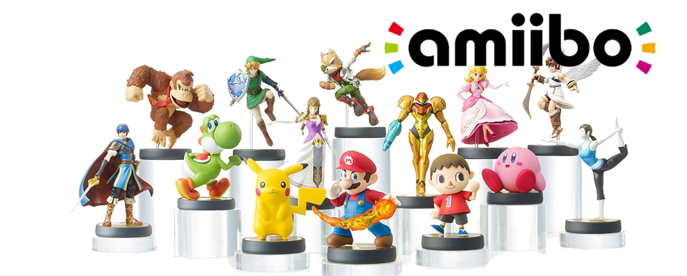

amiibo
Es una serie de figuras producidas por Nintendo para su uso con las plataformas de juegos de Nintendo 3DS y Wii U. De forma similar a Skylanders y Disney Infinity, estas figuras, que están moldeadas como diferentes personajes de varias franquicias de Nintendo, usan la tecnología de comunicación de corto alcance (NFC) para interactuar con el software del videojuego compatible, permitiendo que los datos sean transferidos dentro y fuera de cada juego y en múltiples plataformas.